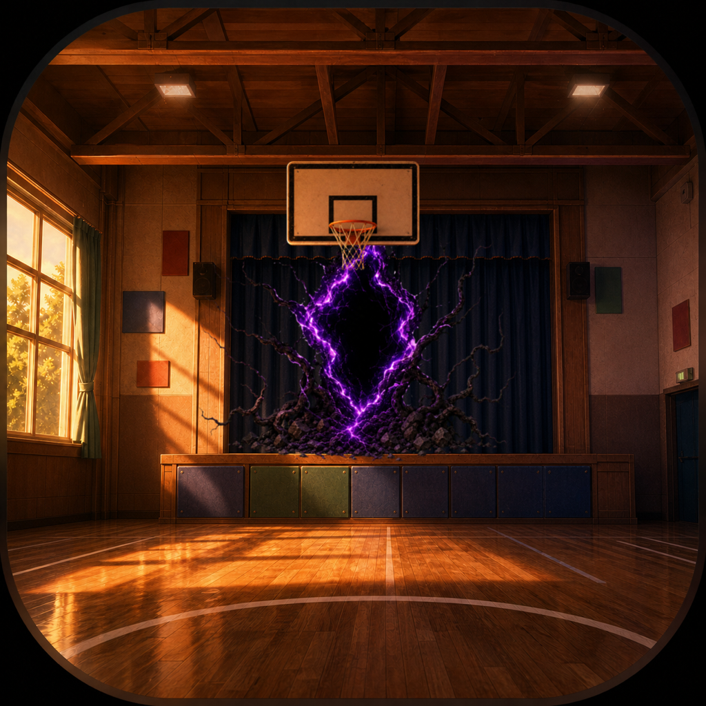
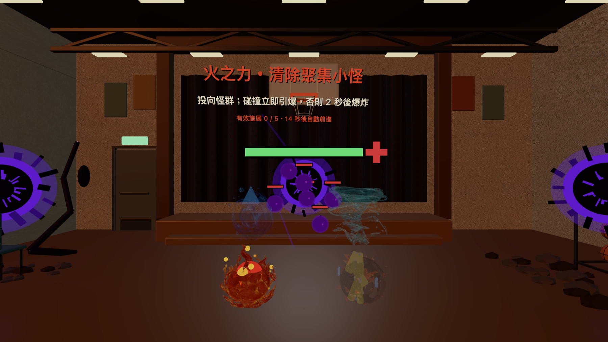
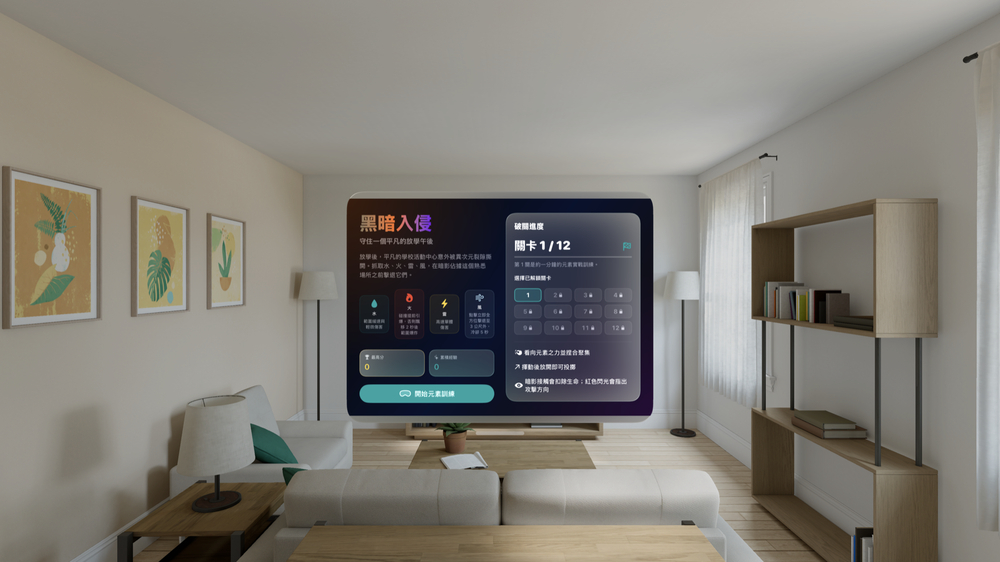
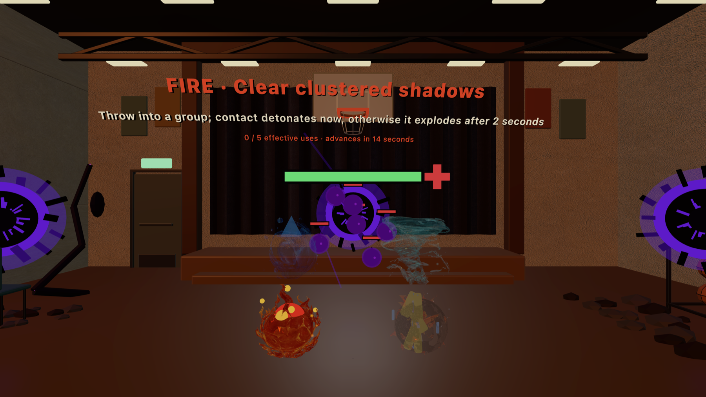
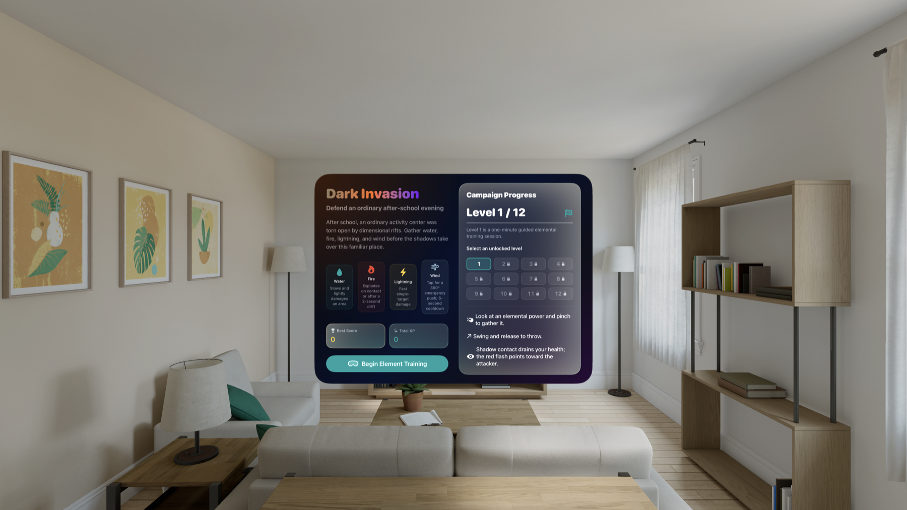

Apple Vision Pro · visionOS 1.0 已上架放學後，熟悉的活動中心成了四元素戰場。
異次元裂隙在舞台前打開，暗影從三座傳送門逼近。凝視元素、捏合抓取、揮動並放開，以水、火、雷、風守住自己周圍最後的安全範圍。

一座學校活動中心，兩種截然不同的時刻
遊戲開始前，關卡與四元素戰術出現在安靜的 visionOS 視窗中；進入關卡後，客廳會被完整的學校活動中心取代。夕陽照進楓木球場，舞台布幕與舊籃球框仍在原位，但中央蟲洞、暗影根系與逐關擴大的侵蝕，讓熟悉空間慢慢失去安全感。

四種力量，不是四種顏色
每種元素都有不同的出手方式與戰術位置。暗影靠近時，選對力量比連續投擲更重要。
第一關教你活下來，接著是 12 道防線
第一關是一段約一分鐘、搭配語音的元素實戰訓練。水、火、雷、風各自出現在適合它的敵情中，不需要先讀完長篇說明。完成教學後，傳送門角度會從正前方逐步展開，怪群更密集，厚血怪與首領也會加入。
敵人有空間 HP 條，逼近時會出現紅色脈動警示；受擊方向也有視覺與低頻音效回饋。
先用水控場、火清群、雷打重點，或在安全距離即將消失時使用風。
勝利後直接解鎖下一關，也能重玩已完成關卡，直到第 12 關完成整條戰線。
空間音訊與多語言語音
施法、命中、暗影崩解與結算聲音會從事件發生的位置播放。低干擾環境音樂維持活動中心的壓迫感，勝利與失敗則各有獨立的粒子、和弦與語音。介面與語音支援繁體中文、簡體中文、英文、日文、韓文、德文、法文、俄文、葡萄牙文、西班牙文與義大利文。
進度與遊戲紀錄留在裝置上
分數、經驗值、最高分、解鎖關卡與最近遊戲統計都保存在 App 沙盒。遊戲不需要帳號，也沒有廣告、App 內購買或追蹤；不記錄眼動軌跡、手部關節或投擲座標、房間網格、相機影像、使用者身分或裝置識別碼。
Apple Vision Pro 遊戲需要安全的活動空間。開始前請清除周圍障礙，並在遊玩時持續留意環境。
黑暗入侵 1.0 已在 Apple Vision Pro 上架。完整 12 關、四元素空間手勢、三類暗影與 11 種語言，現在都可以進入活動中心親自迎戰。
After school, a familiar activity center becomes an elemental battlefield.
A dimensional rift opens in front of the stage and shadows advance through three portals. Look at a power, pinch to grab it, swing, and release—then use water, fire, lightning, and wind to defend the last safe space around you.

One school activity center, seen at two very different moments
Before battle, a calm visionOS window introduces the campaign and each elemental role. Starting a level replaces the room with a full activity center. Sunset still reaches the maple court, stage curtain, and old basketball hoop, but a central rift, shadow roots, and three stages of corruption gradually make the familiar space feel unsafe.

Four powers with four different jobs
The elements are not interchangeable color variants. Each has its own gesture, timing, and place in the defense.
Level 1 teaches survival; the next 11 test it
Level 1 is an approximately one-minute voiced combat tutorial. Each power appears in the situation it is meant to solve, with no long manual required. After training, portal angles widen, mixed swarms grow denser, and brutes and bosses join the attack.
Spatial health bars, a red proximity pulse, directional impact light, and low-frequency audio reveal what is closing in.
Slow with water, clear with fire, focus with lightning, or use wind when the safe radius is about to disappear.
Unlock the next level after a win, replay completed defenses, and continue to the final Level 12 result.
Spatial audio and localized voices
Casting, impacts, shadow collapse, and results play from their locations in the arena. Low-interference ambient music sustains the activity center's tension, while victory and defeat have separate particles, chords, and spoken results. The interface and voice set support Traditional Chinese, Simplified Chinese, English, Japanese, Korean, German, French, Russian, Brazilian Portuguese, Spanish, and Italian.
Progress and gameplay records stay on device
Score, experience, high score, unlocked levels, and recent gameplay statistics stay in the app sandbox. Dark Invasion requires no account and includes no ads, in-app purchases, or tracking. It does not record eye movement, hand joints or throw coordinates, room meshes, camera imagery, identity, or device identifiers.
Apple Vision Pro play requires a clear physical area. Remove nearby obstacles before starting and remain aware of the environment while playing.
Dark Invasion 1.0 is now available for Apple Vision Pro. Its 12-level campaign, four spatially cast powers, three shadow classes, and 11 languages are ready to play inside the activity center.